Here is a list of the activities you must try while in Israel:
- 1. Beach day at Gordon Beach
- 2. Tubing in the Red Sea
- 3. Shop for Shabbat dinner at the Cramel Market
- 4. See the graffiti in Florintine
- 5. Visit the Western Wall in Jerusalem
- 6. Go scuba diving in Eilat
- 7. Watch the sunset at the beach every night
- 8. Ride ATVs in the desert
- 9. Go waterfall repelling in the Golan Heights
- 10. Hike Masada before sunrise
- 11. Take camels through the Negev desert
- 12. Visit a Bedouin village and sleep in the tents
- 13. Take in the view from the Makhtesh Ramon crater
- 14. Sleep under the stars in the Negev
- 15. Go in the tunnels under Jerusalem
See the fun for yourself!
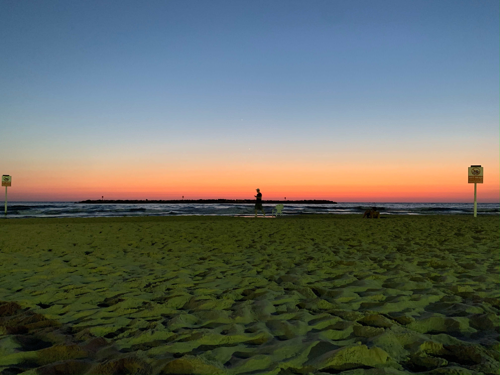
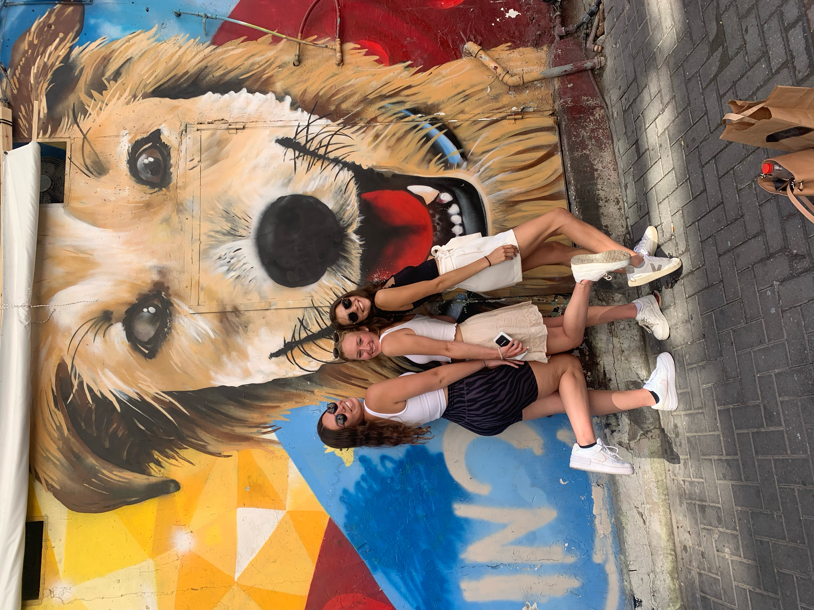
 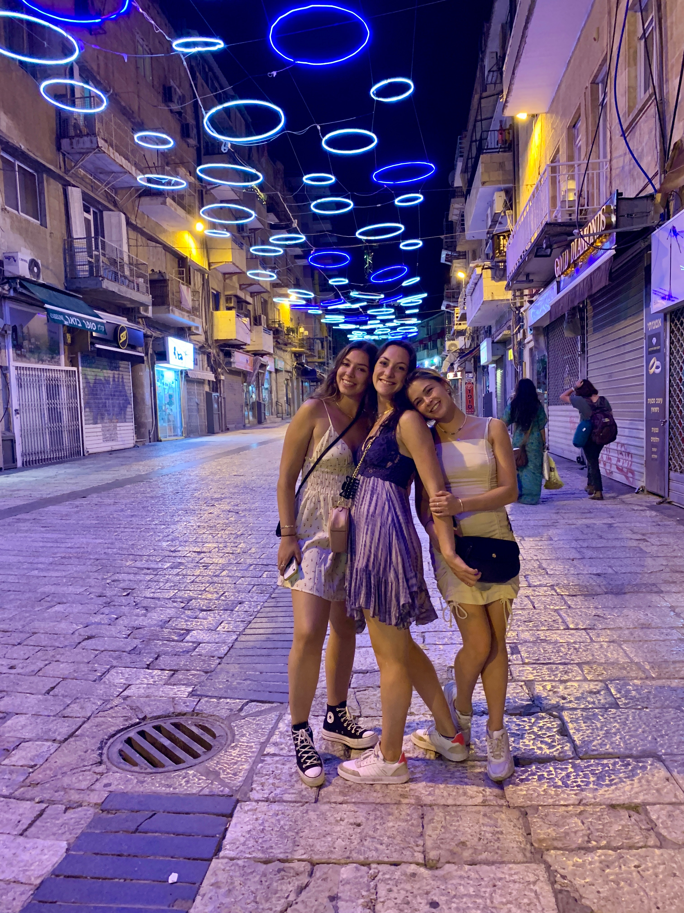
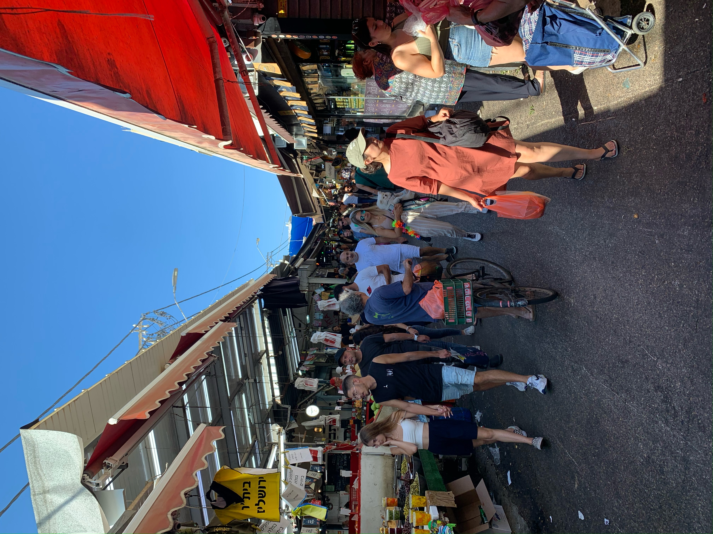
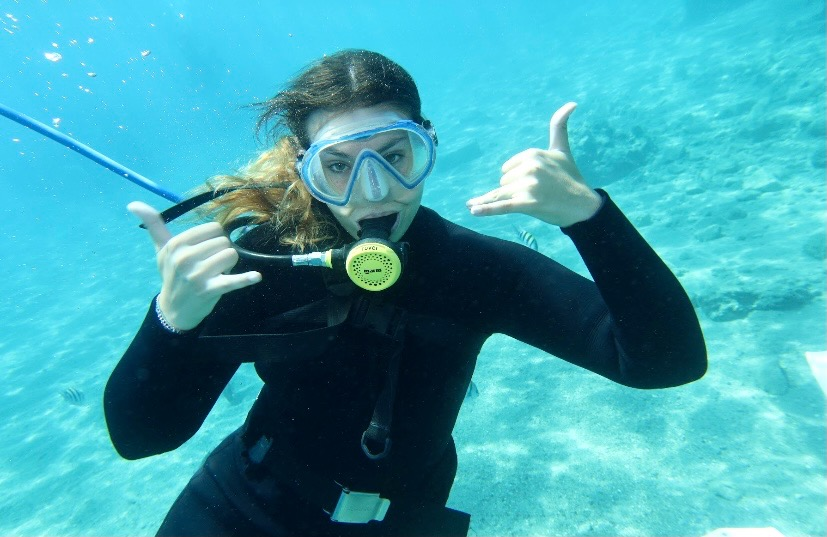
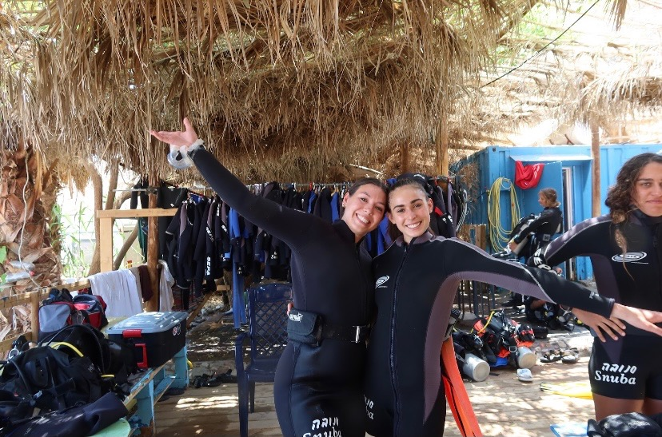
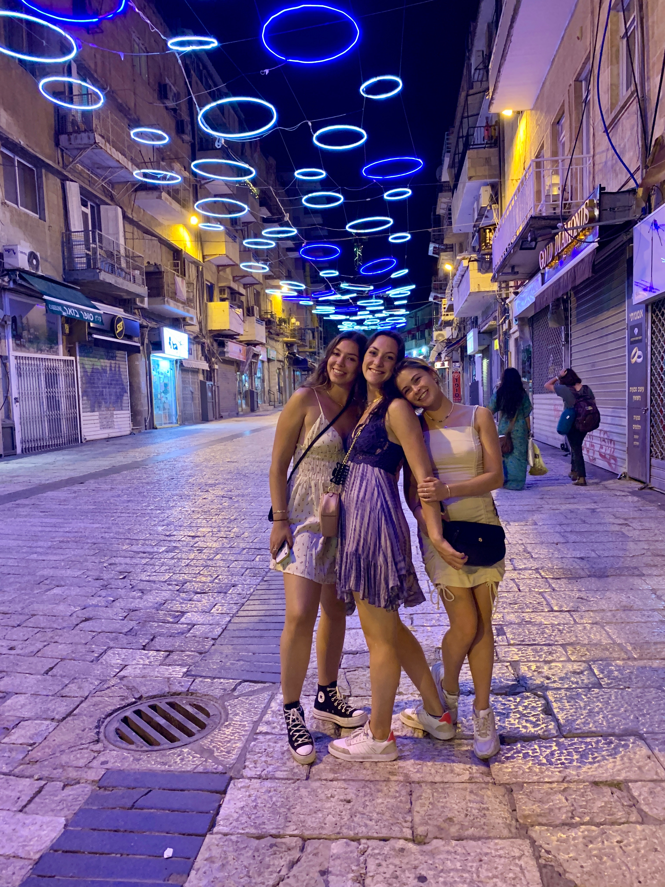
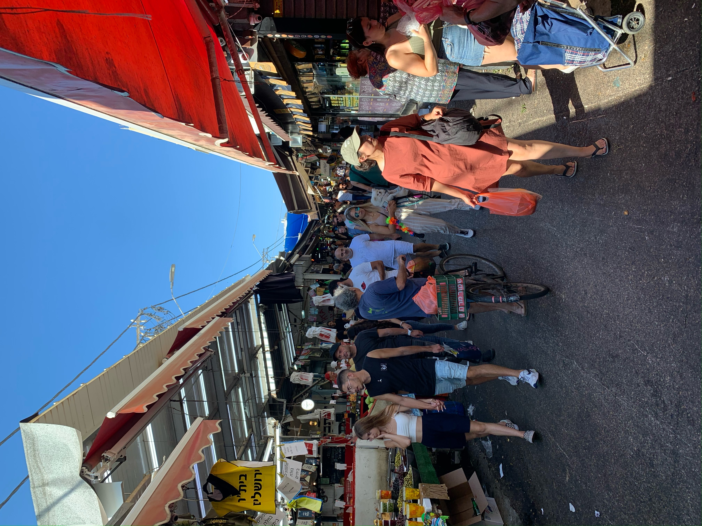
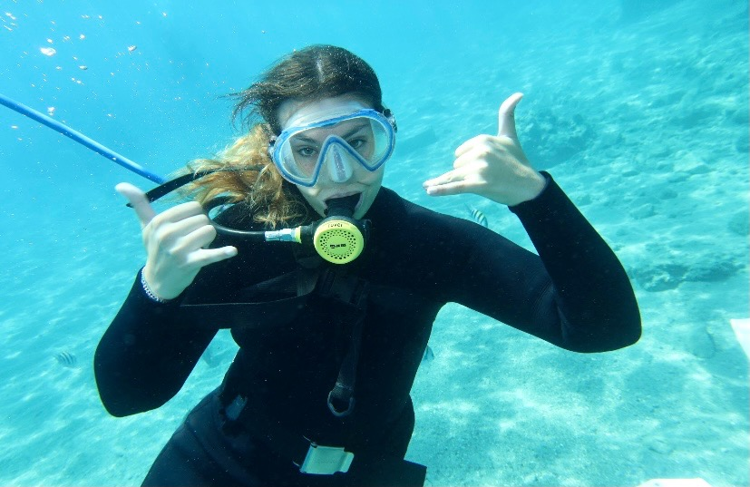
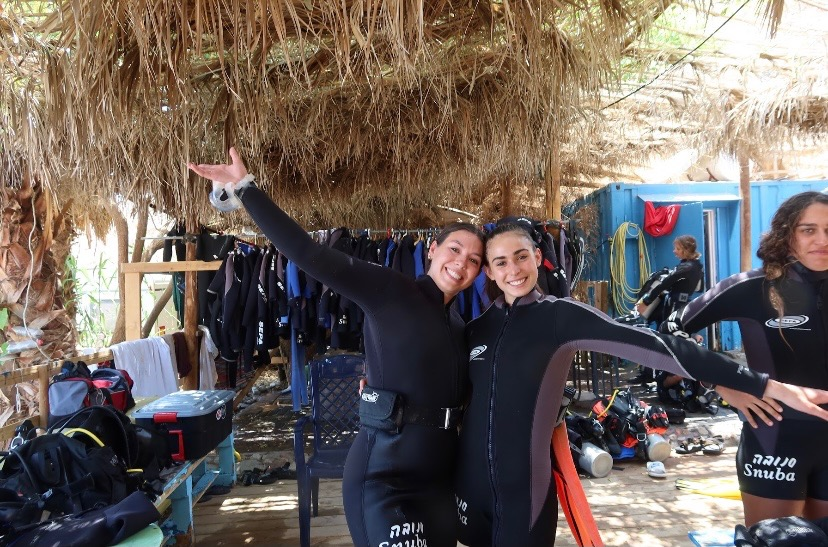
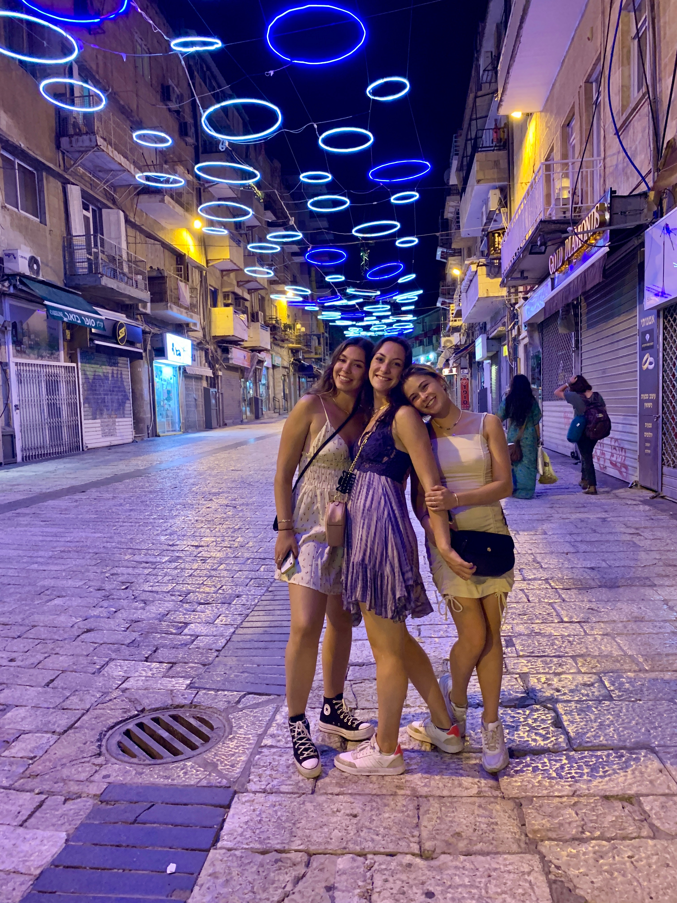
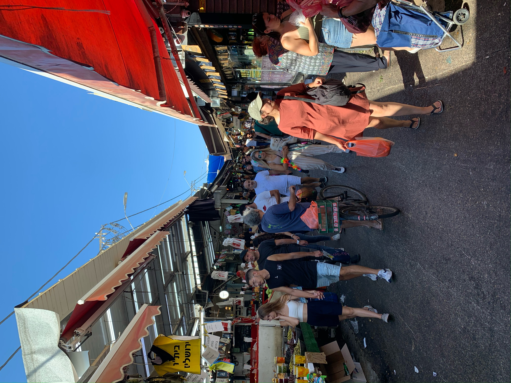
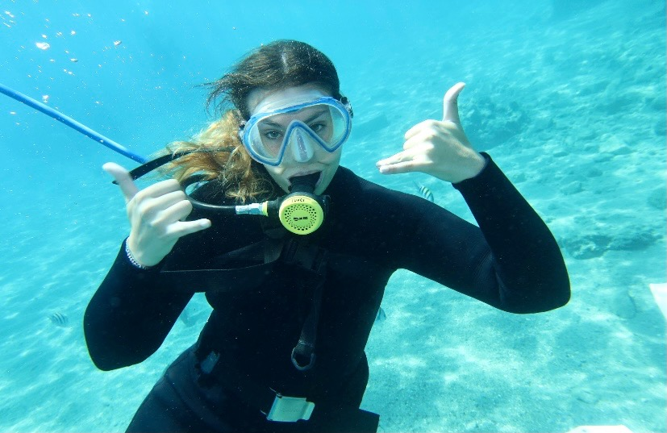
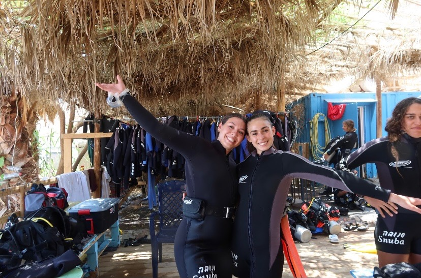